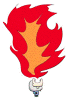

目錄
摘要
某天，忍者潛入敵營執行任務，但在撤退時不慎被敵人發現，為了逃離，他決定使出忍
術擺脫追兵，玩家將協助忍者迎擊敵人，直至成功脫險。
設計動機
設計緣由
因為本身喜歡輕鬆的小遊戲，且對忍者文化感到著迷，因此參考市面上的相關遊
戲後，決定以簡單的遊戲玩法和可愛畫風去發想，然後主要客群是12歲~30歲，希望
他們在產生多巴安的同時，可以了解和喜歡上忍者文化的魅力。
設計目標
忍者會去三個地方執行任務，但都剛好被發現，所以關卡設計上總共有三大關，
每關都有不同主題和敵人，玩家只要破十小關，就能進到下個世界，直到完成全部關卡後，忍者就能成功逃脫。
遊戲介紹
遊戲類型
人數：單人
類型：2D平面、策略防守
平台：android
方向：直向
遊戲風格
以卡通「忍者哈特利」做參考，整體日式風格來設計。
角色設計
▲
忍者和角色成功/失敗的樣子
道具&忍術設計
▲
寶箱怪：不定時出現，擊敗可獲得大量金幣。
|
道具：隨機以藍、黃、紅色包裹出現。 |
|
火器 |
毒氣 |
兵糧丸 |
|
|
|
|
|
隨機消滅一個東西，可能是敵人也可能是寶箱或道具。
|
包括忍者，所有東西中毒，遊戲失敗。 |
讓敵人降落速度變慢３秒。 |
|
忍術：每個忍術一場遊戲只能使用一次，最多能選擇三個忍術上場 |
|
火術 |
分身術 |
苦無雨 |
|
 |
|
|
|
忍者噴火，針對場上所有的小粉做消滅。
|
召喚三個分身，消滅離地面最近的三個敵人。 |
消滅場上的所有敵人。 |
場景設計

遊戲玩法
只需使用一根手指，就能將敵人從牆上摔落，而玩家將繪製對應的符號協助忍者
擺出結印手勢迎擊敵人，直至成功脫險，目標是阻止敵人降落地面。
遊戲方式
•遊戲開始，忍者跑到中間，敵人從上往下降落。
•玩家繪製手勢成功，敵人摔下並掉落金幣。
•玩家繪製手勢失敗，敵人落地且遊戲失敗。
•敵人唐傘小僧：攻略難度低，頭上僅有一個符號。
•敵人舞首：攻略難度中，頭上通常有3~4個符號。
•敵人長頸女妖：攻略難度高，符號複雜。
•寶箱怪：頭上會連續出現各種不同的符號，都要畫完才能擊落獲得金幣，沒成功畫完則
不會獲得。
•道具：不定時以包袱的樣子出現，因為被包裹著，所以看不出來裡面的道具是什麼，然
後一樣用繪製符號獲得，成功後會掉落在地上，需要幫助時點選即可。
•忍術：在介面最底下可看到忍術按鈕，每個忍術一場遊戲只能使用一次，最多能選擇帶
三個忍術上場。
•金幣：擊敗敵人和寶箱怪可獲得，可以在商店購買忍術卷軸，解鎖更多特別的忍術。
•商店販賣的忍術：隱身術、變身術、水遁、土遁
•有限時３分鐘和無盡模式可選擇，會針對背景色做變化讓玩家了解現在的模式是什麼。
遊戲畫面示意圖
遊戲流程圖
SWOT分析
•S優勢：遊戲玩法簡單，題材特殊。
•W劣勢：遊戲過於單調，易導致玩家流失。
•O機會：可運用社群平台進行創意宣傳，提升曝光度。
•T威脅：遊戲市場競爭激烈，需在推出後快速建立玩家基礎。
工作分配
設計：
1.
封面、Logo設計
2.
前導動畫
3.
忍者：角色/動畫設計
4.
妖怪：角色//動畫設計
5.
道具、忍術、商店設計
6.
場景設計
7.
介面/按鈕設計
8.
教學示意圖
程式：
1.
隨機怪物
2.
手勢偵測套件
3.
單機版資料庫
甘特圖
參考遊戲
介面參考：Magic
Touch
玩法參考：Google
Halloween
回首頁